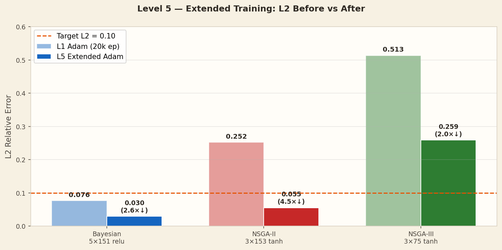
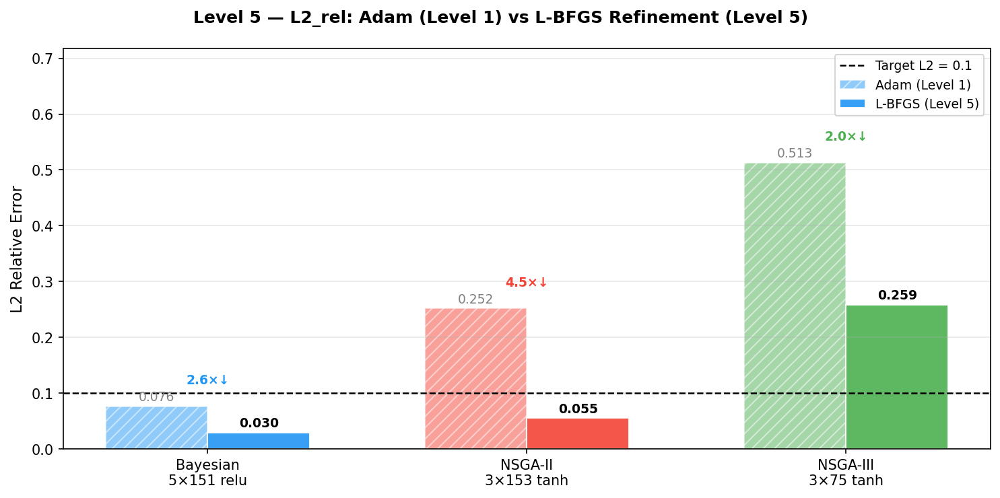

The best NAS-found architectures from Level 1 are retrained with a longer cosine learning-rate schedule. No architecture changes — only more training time. NSGA-II improves 4.5× and finally meets the L2 < 0.10 target.
Level 5 answers a key question: were the Level 1 architectures fundamentally limited, or just under-trained? The answer — confirmed here — is that epoch count was the bottleneck, not architecture capacity.
Note: L-BFGS second-order optimisation was planned but not executed (lbfgs_iters=0 in config). All improvements here come from extended Adam with cosine LR.
| Optimiser | L1 L2 | L5 L2 | Improvement | Status |
|---|---|---|---|---|
| Bayesian | 0.076 | 0.030 | 2.6× | ✓ |
| NSGA-II | 0.252 | 0.055 | 4.5× | ✓ |
| NSGA-III | 0.513 | 0.259 | 2.0× | ✗ |
| Target | L2 < 0.100 | |||
NSGA-III still misses the target even with extended training. Its small 3×75 architecture (12k params) appears to be the real capacity limit.
| Optimiser | L1 MAE | L5 MAE | Reduction |
|---|---|---|---|
| Bayesian | 39.1°C | 15.6°C | 2.5× |
| NSGA-II | 132.6°C | 28.6°C | 4.6× |
| NSGA-III | 270.3°C | 136.0°C | 2.0× |

Before/after L2 error for all three optimisers. Green = meets target.

L2 error as a function of training epoch for all three architectures.